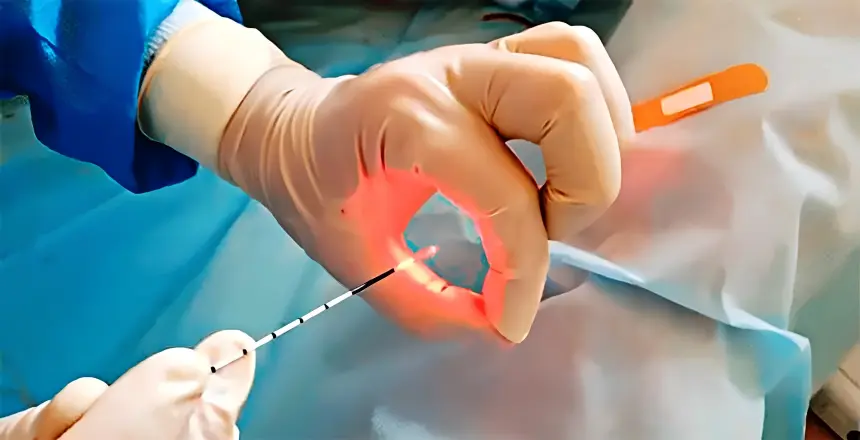
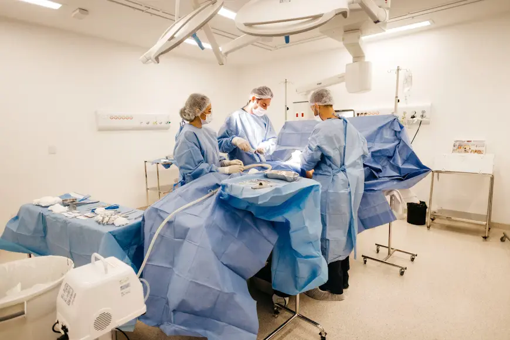

Laser Fistula & Fissure Surgery
Precise laser treatment for anal fistulas and fissures with minimal discomfort.
See moreCare beyond the emergency
Our General and Emergency Surgery department delivers timely surgical care for both planned and urgent conditions. Combining accurate diagnosis, advanced surgical techniques, and comprehensive post-operative management, we ensure safe treatment and optimal recovery at every stage.

Timely evaluation and prompt surgical intervention help reduce complications and improve treatment outcomes.
Skilled surgeons manage both emergency and planned procedures with precision and patient safety.
From diagnosis through recovery, every patient receives personalized treatment and dedicated follow-up support.

Precise laser treatment for anal fistulas and fissures with minimal discomfort.
See moreLaser closure of damaged veins for pain relief and improved circulation.
See moreLaparoscopic removal of gallbladder stones and inflamed appendix with faster healing.
See more